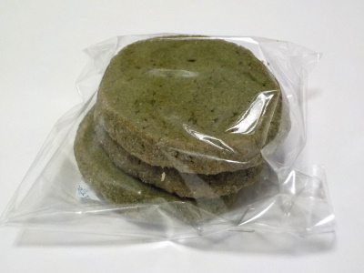
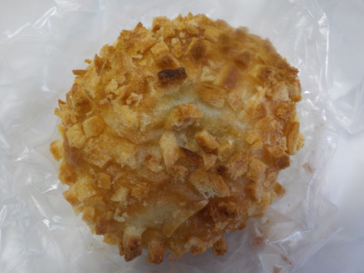
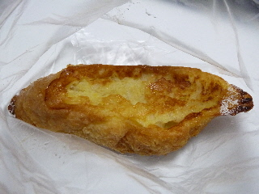
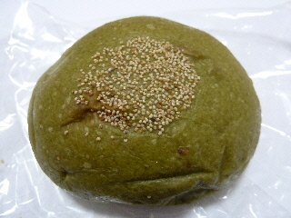
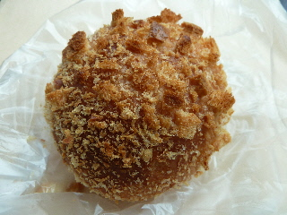
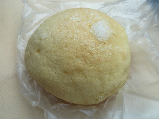
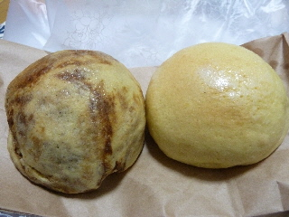
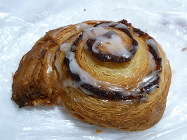

ミケの抹茶クッキー。
2023/05/13

クッキー3枚210円です。高級ですね。
やわらかくてサクサクっとした食感なので、噛んだ時に抹茶のいい香りと味が広がしました。
とっても美味しい。
でも高級なので沢山食べれないのがちょっと残念。いっぱい食べても問題ないよってくらいの収入が欲しいな。
島根県出雲市大社町杵築南1342-7
2023/05/13

クッキー3枚210円です。高級ですね。
やわらかくてサクサクっとした食感なので、噛んだ時に抹茶のいい香りと味が広がしました。
とっても美味しい。
でも高級なので沢山食べれないのがちょっと残念。いっぱい食べても問題ないよってくらいの収入が欲しいな。
2020/12/12
14時くらいに行ったらパンが完売して閉店していました。
あーあ。
今日は出雲大社も人が多かったので仕方ないかな。
GOTOのせいかな。
2020/02/14

パンに付いてるクルトンがザクザクしててせんべいみたいでした。
この食感と香ばしい味がとっても好きです。
カレーパン以外の商品もザクザクしたのがあるといいのにな。
2014/11/08
小さくて甘ーい香りのするパンでした。

なんとなく上品な感じがしました。
2014/04/06
抹茶あんぱんです。

見た感じ、深みのある緑色が渋いですね。
中身も、抹茶味が効いてて渋かったです。
あんぱんのあんもしっかりと甘かったので、濃い味のパンでした。
2014/03/09
出雲大社の帰りに、おいしいカレーパンを見つけました。
神門通りにあるパン屋「ミケ」さんのカレーパンです。

パン粉サクサクで、食感がめちゃくちゃいいです。
中には美味しいカレーが多めに入っていました。
もっと食べたい！また食べたい！って思いました。

こっちはメロンパンです。このパンだけ上に砂糖が乗ってました。
ちょっと変わってたので写真撮りました。
2014/01/01
大社に新しく出来たパン屋さんがやってるかなーって思いながら行ってみたらオープンしていました。
ブーランジェリー ミケさんです。
元旦から営業っていいですね。
ほとんどパンは売り切れてて、買えたのはこの2つです。

メロンパンとコーヒーメロンパンかな？
出来たてでネームプレートが置いてなかったのでちゃんとした名前はわかりませんでした。
中のパンがふかふかでした。食パンの真ん中を食べてるみたいだなーって思いました。
美味しい美味しい。
2013/12/08
大社の神門通りにパン屋さんが出来ました。
ホームページを色々探したら、フェイスブックがありました。
ブーランジェリー ミケって名前のお店です。
フェイスブックはこちら
https://www.facebook.com/Boulangeriemike?ref=stream
少しレトロな感じのお店ですね。

ゆずのデニッシュをいただきました。
デニッシュが超パリパリでザクザクです。
新食感でした。
チョコレートのお菓子「ルマンド」の中身みたいにパリパリでした。
面白い商品です。
他の商品も色々食べてみたい！って思いました。
出雲大社に行った時にはよく寄ります。